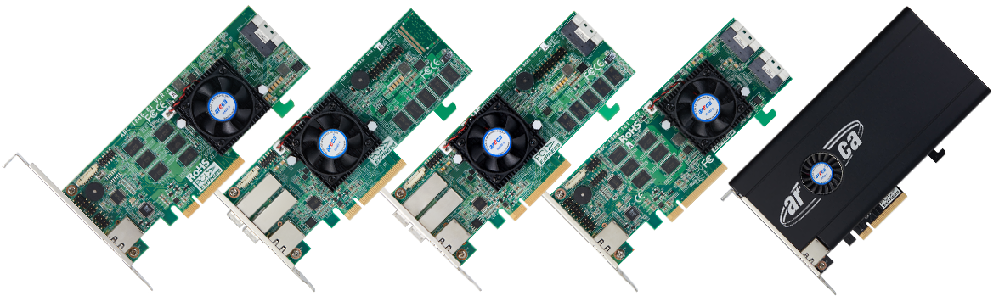

ARC-1886 series
(8/16 Ports PCIe Gen 4.0 Tri-Mode RAID Adapters)
Product Highlights
✵ Support up to 8GB DDR4-2666 cache
✵ SFF-9402 compliant connector pin-out
✵ Support read/write cache allocation by policy
✵ Support up to 32 NVMe drives using PCIe switch
✵ Redundant flash image for adapter availability
✵ UBM, SES2, SMP and SGPIO enclosure management
✵ Support up to (512) 12Gb/s SAS, SATA or SSD drives using SAS expanders
✵ Support optional cache backup module (CBM) protection using SuperCap
✵ Tri-mode interface at each drive ports-12Gb/s SAS/SATA/ Gen 4.0 PCIe (NVMe)
✵ Controller level hardware encryption and self-encryption drive management
✵ Support RAID 1 - Multi Mirroring and Mirrored Pass-Through Disk
✵ Multiple RAID 0 and RAID 10 (1E) support (RAID 00 and RAID100)
✵ Broad operating support including Windows, Linux, FreeBSD, macOS and VMware
8/16 Ports PCIe Gen 4.0 Tri-Mode RAID Adapters
The new fourth generation ARC-1886 family offers advanced technology for increased performance and improved enterprise data protection. They were designed with 1.6 GHz dual core ROC processor, DDR4-2666 memory and PCIe 4.0 interface for the most performance-hungry database and IT applications. Based on the ARM A15 PCIe 4.0 x8 to SAS/SATA/PCIe RAID on Chip (ROC) controller, the ARC-1886 series RAID adapters can offer both PCIe Gen 4.0 host and 12Gb/s SAS/SATA/PCIe (NVMe) tri-mode storage interfaces.
| ARC-1886 Series 8-Ports PCIe Gen 4.0 Tri-Mode RAID Adapters | ||
| ARC-1886-8I | ARC-1886-8X | |
| Physical Dimensions | Low Profile: 167.65(L) x 64.4(H) mm | |
| Ports | 8 x internal | 8 x external |
| Drive Connectors | 1 x SFF-8654 [x8] | 2 x SFF-8644 [x4] |
| Host Bus Interface | 8-Lane PCI Express® 4.0 | |
| I/O Processor | Tri-Mode Dual Core ARM A15 1.6GHz ROC | |
| Cache Memory | 8GB on-board DDR4-2666 SDRAM with ECC Protection | |
| Data Transfer Rate | Up to 12Gb/s SAS/SATA/Gen 4.0 PCIe (NVMe) per port | |
| Drive Support |
|
|
| Power Consumption | Approximately 12 Watts | |
| Operating Temperature | 0 °C to 60 °C | |
| Operating Humidity | 10% to 85%, non-condensing | |
| Cache Protection | ARC-1886-CBM | |
| ARC-1886 Series 12/16-Ports PCIe Gen 4.0 Tri-Mode RAID Adapters | ||
| ARC-1886-4X8I | ARC-1886-4X12I | |
| Physical Dimensions | Low Profile: 167.65(L) x 64.4(H) mm | |
| Ports | 8 x internal & 4 x external | 12 x internal & 4 x external |
| Drive Connectors | 1 x SFF-8654 [x8] 1 x SFF-8644 [x4] |
2 x SFF-8654 [x8] 1 x SFF-8644 [x4] |
| Host Bus Interface | 8-Lane PCI Express® 4.0 | |
| I/O Processor | Tri-Mode Dual Core ARM A15 1.6GHz ROC | |
| Cache Memory | 8GB on-board DDR4-2666 SDRAM with ECC Protection | |
| Data Transfer Rate | Up to 12Gb/s SAS/SATA/Gen 4.0 PCIe (NVMe) per port | |
| Drive Support |
|
|
| Power Consumption | Approximately 14 Watts | |
| Operating Temperature | 0 °C to 60 °C | |
| Operating Humidity | 10% to 85%, non-condensing | |
| Cache Protection | ARC-1886-CBM | |
| ARC-1886 Series 16-Ports PCIe Gen 4.0 Tri-Mode RAID Adapters | |||
| ARC-1886-8X8I | ARC-1886-16I | ARC-1886-4N8I | |
| Host Bus Interface | 8-Lane PCI Express® 4.0 | ||
| Physical Dimensions | LP-MD2: 167.65(L) x 64.41(H) mm | 205(L) x 107.2(H) mm | |
| Ports | 8 x internal & 8 x external | 16 x internal | |
| Drive Connectors | 1 x SFF-8654 [x8] 2 x SFF-8644 [x4] |
2 x SFF-8654 [x8] | 1 x SFF-8654 [x8] 4 x M.2 Connectors |
| RAID-on-Chip Controller | Tri-mode Dual Core ARM A15 1.6GHz ROC | ||
| Cache Memory | 8GB on-board DDR4-2666 SDRAM with ECC Protection | ||
| Data Transfer Rate | Up to 12Gb/s SAS/SATA/Gen 4.0 PCIe (NVMe) per port | ||
| Drive Support |
|
||
| Power Consumption | Approximately 14 Watts | ||
| Operating Temperature | 0 °C to 60 °C | ||
| Operating Humidity | 10% to 85%, non-condensing | ||
| Cache Protection | ARC-1886-CBM | ||
RAID Features
Operating Systems
Management Monitor
McRAID Storage Manager
McRAID Utility
McBIOS Configuration Utility
Monitors/Notification
Downloads
Cable
ARC-1886 series RAID adapters are configured with x8 SFF-8654 internal connectors for maximum performance and connectivity.
Ensure smooth RAID Adapters installations with vendor-tested cabling.
| Areca P/N | Length | Description / Image | To ARID Adapter | To Drives/Backplane |
|---|---|---|---|---|
| 26II-1C5412-1M00 | 1M | SFF-8654 74P to 2x Oculink 42P, SFF-8611[x4] | x8 SFF-8654 | Two x4 SFF-8612 (OCuLink) |
| 26II-1C5407-1M00 | 1M | SFF-8654 74P to 8x SATA | x8 SFF-8654 | Eight SATA |
| 26II-1C5439-1M00-U3 | 1M | SFF-8654 74P to 8x SFF-8639 with power | x8 SFF-8654 | Eight U.3 SFF-8639 |
| 26II-1C5443-1M00 | 1M | SFF-8654 74P to 2x Mini SAS HD 100 Ohm | x8 SFF-8654 | Two x4 SFF-8643 Mini-SAS HD (SAS Connections) |
| 26II-1C5454-1M00 | 1M | SFF-8654 74P to SFF-8654 74P | x8 SFF-8654 | One x8 SFF-8654 (SlimSAS) |
| 26II-1C5454-1M00-2x4 | 1M | SFF-8654 74P to 2x SFF-8654 38P | x8 SFF-8654 | Two x4 SFF-8654 (SlimSAS) |
| 26II-1C5487-1M00 | 1M | SFF-8654 74P to 2x SFF-8087 | x8 SFF-8654 | Two x4 SFF-8087 Mini-SAS (SAS Connections) |